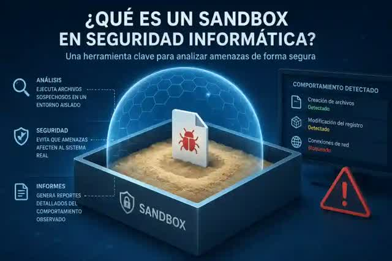

😊 Jugar Seguro, Jugar sin Virus

1️⃣ Windows SandBox
Este es una Maquina Virtual Nativa de Windows para Ejecutar Aplicaciones Inseguras.
Se debe activar desde Configuracion > Sistema > Caracteristicas Opcionales > Mas Caracteristicas. O Buscando desde el menu inicio “activar caracter windows”.
Activamos el “Espacio Aislado de Windows” y Reiniciamos la PC.

Al volver a iniciar tendras un nuevo programa Instalado llamado “Windows SandBox”

Al iniciarlo se abrira una pestaña con un Windows Nuevo. Debes descargar el juego y demas cosas necesarias desde Aqui.
Nota: en Windows10 los datos se Resetean al cerrar el sandbox.
Mas Info Sobre Windows SandBox ↗️
2️⃣ SandBoxiePlus
Este Programa aisla los programas inseguros directamente, no es necesario descargar todo de nuevo aqui como el Metodo Anterior.
Instala el Programa y Configuralo.
Abre un Juego Inseguro desde donde lo tengas.

Juegos Online Requieren que Tengas Steam en el SandBox Tambien.
Si el juego o programa falla, puedes elegir el nivel de seguridad del SandBox (Puedes tener varios)

Mas Info Sobre SandBoxiePlus ↗️
4️⃣ Sistema Portable, Seguridad Definitiva
Metodo para Tener un Sistema separado del Sistema que usas Habitualmente.
Windows Portatil desde un Pendrive o Disco Duro Portatil para llevar a todos lados e iniciar en cualquier Computadora de Manera Segura.
Necesitamos:
- Memoria USB de 16GB o mas
- ISO Windows Lite ↗️
o tambien podes descargar la Iso Windows Original pero ese requiere una memoria usb/disco duro de minimo 50GB.
Descomprimimos el Archivo Descargado y abrimos el Programa “Rufus”
Si Rufus Solicita Actualizacion, Actualizalo. Luego Sigue con el Procedimiento
Conectamos y seleccionamos nuestro USB en el primer menu y en el segundo menu el Archivo Windows.iso. En “Opciones de Imagen” ponemos “WindowsToGo” y Empezar.

En este menu no se lee correctamente, pero es una pregunta para Deshabilitar el Antivirus “Windows Defender”.
Como este sera nuestro sistema de juegos inseguro, pulsamos la primera opcion para deshabilitarlo.

En este menu no cambiamos nada, ya que ya vienen desactivados por defecto en este Windows. Puedes ajustar si prefieres que este sistema no tenga acceso a la memoria interna de la PC para mas proteccion.

Aceptar todo e instalar. Puede que muestre un error al final, pero el USB ya sera funcional.
Tambien Puedes instalarlo como una Instalacion Normal en una Particion Interna.
#️⃣ Iniciar el Windows Portable
Reiniciamos la PC con el pendrive conectado.
Cuando aparezca una imagen en pantalla Presionamos F8, F9 o F12 (la tecla varia dependiendo de la marca de la pc)

F12 Boot Device
Aparecera un menu que pregunta con que sistema operativo quieres iniciar, Elegimos el nombre del pendrive, aveces puede decir Windows Boot Loader.

Elegir el Nombre del Pendrive o Debian que empiece con “UEFI”
En caso de que no suceda nada al presionar F12 o F9 debes ajustar la bios para iniciar desde el usb. Ajustar la BIOS ↗️
5️⃣ Jugar en Linux, Seguridad Definitiva 2
Al igual que el metodo anterior, podemos Instalarlo desde un USB o Disco Duro portatil. En este metodo Linux no accede a los archivos de tu pc amenos de que tu montes tu disco duro de manera explicita.

💟 Añade a los Jugadores del Grupo
🛂 Instalar Juegos con Hydra Launcher
Descargamos e Instalamos HydraLauncher ⬇️
Una vez instalado agregamos las fuentes y buscamos el Juego que Queremos, los de OFM tienen Funciones Online. Cualquier Duda en el Grupo de Juegos.